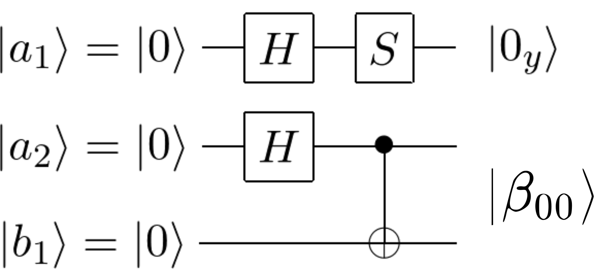
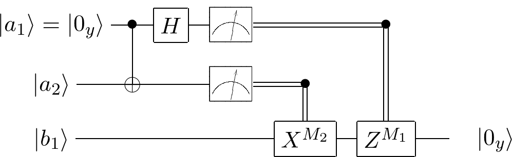

Qubits and quantum computation
In this section of the tutorial we will explain the netsquid.qubits subpackage for quantum computation. We will do so by (loosely) following the example of quantum teleportation in terms of the qubit and quantum state manipulations involved i.e. purely in terms of the linear algebra, and not yet adding timing or network modelling, which will be discussed in later sections.
Learning goals
Anatomy of qubits and their manipulation via operators and measurements (essential).
General measurements and the available noise operations (advanced).
Advanced sections are denoted by an asterix (*).
Qubits and their quantum state
Qubits are represented by Qubit objects.
A qubit holds a quantum state (QState), which it may dynamically share with other qubits.
When qubits interact their quantum states combine into a shared state,
whereas when qubits are measured their quantum state is split to conserve memory (memory grows superlinearly with the number of qubits).
If a qubit is not required anymore it can be discarded, which removes its existence completely.
For illustration let us start by creating some qubits:
>>> import netsquid as ns
>>> q1, q2 = ns.qubits.create_qubits(2)
By default each qubit is created in the \(\vert 0\rangle\) state.
To represent this state, every QState contains a representation (QRepr).
The type of representation is determined by the chosen formalism, which is the KET formalism by default.
As we show below the quantum state of a qubit is accessible via its qstate attribute.
However, this is considered low-level access and should not be necessary in practice – we will introduce more convenient methods as we proceed.
>>> q1.qstate.num_qubits
1
>>> print(q1.qstate.qrepr)
KetRepr(num_qubits=1,
ket=
[[1.+0.j]
[0.+0.j]])
>>> print(q2.qstate.qrepr)
KetRepr(num_qubits=1,
ket=
[[1.+0.j]
[0.+0.j]])
NetSquid will automatically combine quantum states into a single shared state as qubits interact with each other. We can also tell NetSquid to do this explicitly, although this should rarely be necessary:
>>> q1.qstate == q2.qstate
False
>>> ns.qubits.combine_qubits([q1, q2])
>>> q1.qstate == q2.qstate
True
>>> print(q1.qstate.num_qubits)
2
>>> print(q1.qstate.qrepr)
KetRepr(num_qubits=2,
ket=
[[1.+0.j]
[0.+0.j]
[0.+0.j]
[0.+0.j]])
The recommended way to inspect the quantum state of one or more qubits is to use the reduced_dm() function, which will give a reduced density matrix for any specified qubit(s) in the given order, irrespective of their underlying states:
>>> print(ns.qubits.reduced_dm([q1, q2]))
[[1.+0.j 0.+0.j 0.+0.j 0.+0.j]
[0.+0.j 0.+0.j 0.+0.j 0.+0.j]
[0.+0.j 0.+0.j 0.+0.j 0.+0.j]
[0.+0.j 0.+0.j 0.+0.j 0.+0.j]]
>>> print(ns.qubits.reduced_dm(q2))
[[1.+0.j 0.+0.j]
[0.+0.j 0.+0.j]]
Qubit measurement
Measuring a qubit will by default split it from its shared quantum state:
>>> q1.qstate.num_qubits == q2.qstate.num_qubits
True
>>> q1.qstate.num_qubits
2
>>> ns.qubits.measure(q1)
(0, 1.0)
>>> q1.qstate.num_qubits == q2.qstate.num_qubits
True
>>> q1.qstate.num_qubits
1
>>> print(ns.qubits.reduced_dm(q1))
[[1.+0.j 0.+0.j]
[0.+0.j 0.+0.j]]
The measure operator returns the measurement result and the probability that it measured that result.
Finally, discarding a qubit will not only remove it from its shared quantum state but also leave it stateless:
>>> ns.qubits.combine_qubits([q1, q2])
>>> q1.qstate.num_qubits == q2.qstate.num_qubits
True
>>> q1.qstate.num_qubits
2
>>> ns.qubits.measure(q2, discard=True)
(0, 1.0)
>>> q2.qstate is None
True
>>> q1.qstate.num_qubits
1
Quantum state formalism
The QState class defines a shared quantum state.
A state is represented by a quantum state formalism, or representation, which is an implement (subclass) of the QRepr base class.
In NetSquid the following representations are available as formalisms : KetRepr, DenseDMRepr, SparseDMRepr, StabRepr and GSLCRepr.
These supported formalism can be accessed via QFormalism, which provides shorthand notations: QFormalism.KET, QFormalism.DM, QFormalism.SPARSEDM, QFormalism.STAB and QFormalism.GSLC.
These formalisms have different trade-offs in terms of their memory usage, computation speed, versatility, and universality.
The stabilizer state formalism, for instance, can easily simulate thousands of qubits, but is restricted to Clifford gates, which are not universal.
In the figure below the quantum state representations of an entangled Bell state are shown for three available formalisms, along with their memory scaling with the number of qubits n.
The qformalism documentation page shows a more in-depth overview of the different formalisms.
{kind=link}
The quantum state formalism can be set at the start of a simulation using set_qstate_formalism().
By default the KET formalism is used in NetSquid.
>>> from netsquid.qubits.qformalism import QFormalism
>>> ns.get_qstate_formalism()
<class 'netsquid.qubits.kettools.KetRepr'>
>>> # Change to stabilizer formalism:
>>> ns.set_qstate_formalism(QFormalism.STAB)
>>> ns.get_qstate_formalism()
<class 'netsquid.qubits.stabtools.StabRepr'>
While NetSquid will attempt to convert shared quantum states if it encounters incompatible formalisms, it is good practice not to mix formalisms and instead create qubits anew when switching formalism.
It is also possible to assign a quantum state representation manually to qubits, in which case it is more efficient to initialise the qubits to have no state. For instance, below we assign the state \(\vert +-\rangle\) to two new qubits:
>>> q1, q2 = ns.qubits.create_qubits(2, no_state=True)
>>> ns.qubits.assign_qstate([q1, q2], ns.h01) # assign |+->
>>> print(ns.qubits.reduced_dm(q1))
[[0.5+0.j 0.5+0.j]
[0.5+0.j 0.5+0.j]]
>>> print(ns.qubits.reduced_dm(q2))
[[ 0.5+0.j -0.5+0.j]
[-0.5+0.j 0.5+0.j]]
Let us check the underlying quantum state now indeed uses the stabilizer formalism:
>>> type(q1.qstate.qrepr)
<class 'netsquid.qubits.stabtools.StabRepr'>
>>> q1.qstate.qrepr.check_matrix
array([[1, 0, 0, 0],
[0, 1, 0, 0]], dtype=uint8)
>>> q1.qstate.qrepr.phases
array([ 1, -1], dtype=int8)
Quantum operations
As we have already seen with functions such as reduced_dm(),
NetSquid offers a formalism agnostic API (qubitapi) for manipulating qubits, i.e. the provided functions can be called irrespective of the formalism used for the underlying shared quantum states.
The only exception is a small set of functions that do not support the stabilizer formalism (as documented), for example the general measurement function gmeasure().
In the example of quantum teleportation the quantum state of Alice’s first qubit (a1) is teleported to Bob’s qubit (b1) by utilising an entangled state between Bob’s qubit and a second qubit of Alice’s (a2). We initialise these three qubits using the density matrix formalism, as this will give a meaningful final fidelity for a noisy teleported state without needing to statistically sample.
>>> # Change to density matrix formalism:
>>> ns.set_qstate_formalism(QFormalism.DM)
>>> a1, a2, b1 = ns.qubits.create_qubits(3)
We need some state for Alice to teleport, so let us choose the state
We can prepare this state from the default \(\vert 0\rangle\) state by applying two operators: the Hadamard (H) operator is used to rotate \(180^\circ\) around the Z+X axis (purple arrow), then the phase (S) operator rotates \(90^\circ\) around the Z axis (blue arrow). Here is an animation of the two rotations on the Bloch sphere, where the dots represent the path the qubit takes to reach its final state:
The entangled state we will create between Alice and Bob is the Bell state
A quantum circuit that will prepare the three qubits in these initial states is:
{kind=link}
The operate function provided by the API is used to operate on qubits using a quantum operator (Operator).
Several operators are predefined in the operators module, including X, Y, Z, I, H, S, T, CNOT (or CX), CZ and SWAP.
The circuit above can be realised using operators in NetSquid as follows:
>>> # put a1 into the chosen target state
>>> ns.qubits.operate(a1, ns.H) # apply Hadamard gate to a1: |0> -> |+>
>>> ns.qubits.operate(a1, ns.S) # apply S gate to a1: |+> -> |0_y>
>>> print(ns.qubits.reduced_dm([a1]))
[[0.5+0.j 0. -0.5j]
[0. +0.5j 0.5+0.j ]]
>>> # transform a2 and b1 to the Bell state |b00> = (|00> + |11>)/sqrt(2)
>>> ns.qubits.operate(a2, ns.H) # apply Hadamard gate to a2
>>> ns.qubits.operate([a2, b1], ns.CNOT) # CNOT: a2 = control, b1 = target
>>> print(ns.qubits.reduced_dm([a2, b1]))
[[0.5+0.j 0. +0.j 0. +0.j 0.5+0.j]
[0. +0.j 0. +0.j 0. +0.j 0. +0.j]
[0. +0.j 0. +0.j 0. +0.j 0. +0.j]
[0.5+0.j 0. +0.j 0. +0.j 0.5+0.j]]
Applying operators in this way is purely an exercise in linear algebra; it is not meant to represent the application of physical quantum gates in NetSquid. In later sections of this tutorial we will show how quantum circuits can be represented using quantum programs and abstract instructions, and how the latter can be mapped to the physical instructions of a quantum processing device to include delay, noise etc.
Aside from the predefined operators, it is possible to create custom quantum operators in several ways:
>>> import numpy as np
>>> # Construct a new operator using existing operators:
>>> newOp = ns.CNOT * ((ns.X + ns.Z) / np.sqrt(2) ^ ns.I)
>>> print(newOp.name) # Note: CNOT == CX
(CX*(((X+Z)/(1.41))^I))
>>> # Construct a new operator using a matrix:
>>> newOp2 = ns.qubits.Operator("newOp2", np.array([[1, 1j], [-1j, -1]])/np.sqrt(2))
>>> assert(newOp2.is_unitary == True)
>>> assert(newOp2.is_hermitian == True)
>>> # Construct new operators using helper functions:
>>> R = ns.create_rotation_op(angle=np.pi/4, rotation_axis=(1, 0, 0))
>>> print(R.name)
R_x[0.79]
>>> # Construct a controlled operator:
>>> CR = R.ctrl
>>> print(CR.name)
CR_x[0.79]
After initialising the qubits, the teleportation protocol proceeds with Alice performing a Bell state measurement on her two qubits. She then sends the two classical bits corresponding to her measurement outcomes to Bob, who performs a possible correction. The quantum circuit that does this is the following:
{kind=link}
The measure function is used to perform a projective measurement.
If no observable is specified, the measurement is made in the standard (Z observable) basis: \(\{|0\rangle, |1\rangle\}\).
>>> ns.set_random_state(seed=42) # (Ensures fixed random outcomes for our doctests)
>>> ns.qubits.operate([a1, a2], ns.CNOT) # CNOT: a1 = control, a2 = target
>>> ns.qubits.operate(a1, ns.H)
>>> # Measure a1 in the standard basis:
>>> m1, prob = ns.qubits.measure(a1)
>>> labels_z = ("|0>", "|1>")
>>> print(f"Measured {labels_z[m1]} with prob {prob:.2f}")
Measured |0> with prob 0.50
>>> # Measure a2 in standard basis:
>>> m2, prob = ns.qubits.measure(a2)
>>> print(f"Measured {labels_z[m2]} with prob {prob:.2f}")
Measured |1> with prob 0.50
To measure in a different basis another observable can be specified. For example, to measure in the Hadamard (X observable) basis, \(\{|+\rangle, |-\rangle\}\):
>>> q1, = ns.qubits.create_qubits(1)
>>> m3, prob = ns.qubits.measure(q1, observable=ns.X, discard=True)
>>> labels_x = ("+", "-")
>>> print(f"Measured |{labels_x[m3]}> with prob {prob:.2f}")
Measured |-> with prob 0.50
We can for example ping-pong our qubit between two different measurement observables, as was done in the 10 minute tutorial and we will do for an upcoming example later in this tutorial:
>>> q1, = ns.qubits.create_qubits(1)
>>> for i in range(6):
... observable, labels = (ns.Z, ("0", "1")) if i % 2 else (ns.X, ("+", "-"))
... m, prob = ns.qubits.measure(q1, observable=observable)
... print(f"Measured |{labels[m]}> with prob {prob:.2f}")
Measured |-> with prob 0.50
Measured |0> with prob 0.50
Measured |+> with prob 0.50
Measured |0> with prob 0.50
Measured |-> with prob 0.50
Measured |1> with prob 0.50
General measurements *
The ket vector (KET) and density matrix (DM) formalisms also support general measurements (gmeasure()) on multiple qubits using a list of measurement operators.
The Bell measurement circuit from above can for example also be described as a single measurement on two qubits.
In that case the measurement operators have to be made manually.
Unlike the measure function, a general measurement will not
split the qubit from its shared quantum state.
>>> bell_operators = []
>>> p0, p1 = ns.Z.projectors
>>> bell_operators.append(ns.CNOT * (ns.H ^ ns.I) * (p0 ^ p0) * (ns.H ^ ns.I) * ns.CNOT)
>>> bell_operators.append(ns.CNOT * (ns.H ^ ns.I) * (p0 ^ p1) * (ns.H ^ ns.I) * ns.CNOT)
>>> bell_operators.append(ns.CNOT * (ns.H ^ ns.I) * (p1 ^ p0) * (ns.H ^ ns.I) * ns.CNOT)
>>> bell_operators.append(ns.CNOT * (ns.H ^ ns.I) * (p1 ^ p1) * (ns.H ^ ns.I) * ns.CNOT)
>>> q1, q2 = ns.qubits.create_qubits(2)
>>> ns.qubits.operate(q1, ns.H)
>>> meas, prob = ns.qubits.gmeasure([q1, q2], meas_operators=bell_operators)
>>> labels_bell = ("|00>", "|01>", "|10>", "|11>")
>>> print(f"Measured {labels_bell[meas]} with prob {prob:.2f}")
Measured |10> with prob 0.25
>>> print(q1.qstate.num_qubits)
2
Based on the measurement outcomes of Alice’s Bell state measurement, Bob may need to apply corrections to his qubit to recover the teleported quantum state of Alice.
>>> if m2 == 1:
... ns.qubits.operate(b1, ns.X)
>>> if m1 == 1:
... ns.qubits.operate(b1, ns.Z)
>>> print(ns.qubits.reduced_dm([b1]))
[[0.5+0.j 0. -0.5j]
[0. +0.5j 0.5+0.j ]]
We can check how close a qubit is to the desired state by checking the (squared) fidelity of the qubit.
>>> fidelity = ns.qubits.fidelity(b1, ns.y0, squared=True)
>>> print(f"Fidelity is {fidelity:.3f}")
Fidelity is 1.000
Applying noise *
NetSquid is built to simulate a quantum hardware as accurately as possible. Almost all quantum hardware components are noisy and the quantum state of qubits will decohere with time.
It might be the case that b1 depolarized during the Bell measurement of a1 and a2, which would cause the fidelity of the teleported state to drop:
>>> ns.qubits.delay_depolarize(b1, depolar_rate=1e7, delay=20)
>>> fidelity = ns.qubits.fidelity([b1], reference_state=ns.y0, squared=True)
>>> print(f"Fidelity is {fidelity:.3f}")
Fidelity is 0.909
The qubitapi module also defines some other functions to apply noise or stochastic operations on qubits.
>>> q1, q2, q3, q4 = ns.qubits.create_qubits(4)
>>> ns.qubits.stochastic_operate(q1, [ns.X, ns.Y, ns.Z], p_weights=(1/2, 1/4, 1/4))
>>> print(ns.qubits.reduced_dm([q1]))
[[0.25+0.j 0. +0.j]
[0. +0.j 0.75+0.j]]
>>> ns.qubits.apply_pauli_noise(q2, p_weights=(1/4, 1/4, 1/4, 1/4)) # (I, X, Y, Z)
>>> print(ns.qubits.reduced_dm([q2]))
[[0.5+0.j 0. +0.j]
[0. +0.j 0.5+0.j]]
>>> ns.qubits.depolarize(q3, prob=0.8)
>>> print(ns.qubits.reduced_dm([q3]))
[[0.6+0.j 0. +0.j]
[0. +0.j 0.4+0.j]]
>>> ns.qubits.operate(q4, ns.X) # -> |1>
>>> ns.qubits.amplitude_dampen(q4, gamma=0.1, prob=1)
>>> print(ns.qubits.reduced_dm([q4]))
[[0.1+0.j 0. +0.j]
[0. +0.j 0.9+0.j]]
See also
What is next?
We have shortly touched upon the effect of time on quantum states. Qubit operations and sending qubits or classical messages over channels take time. In the next section we will introduce the discrete event simulator used in NetSquid to keep track of time in quantum networks.